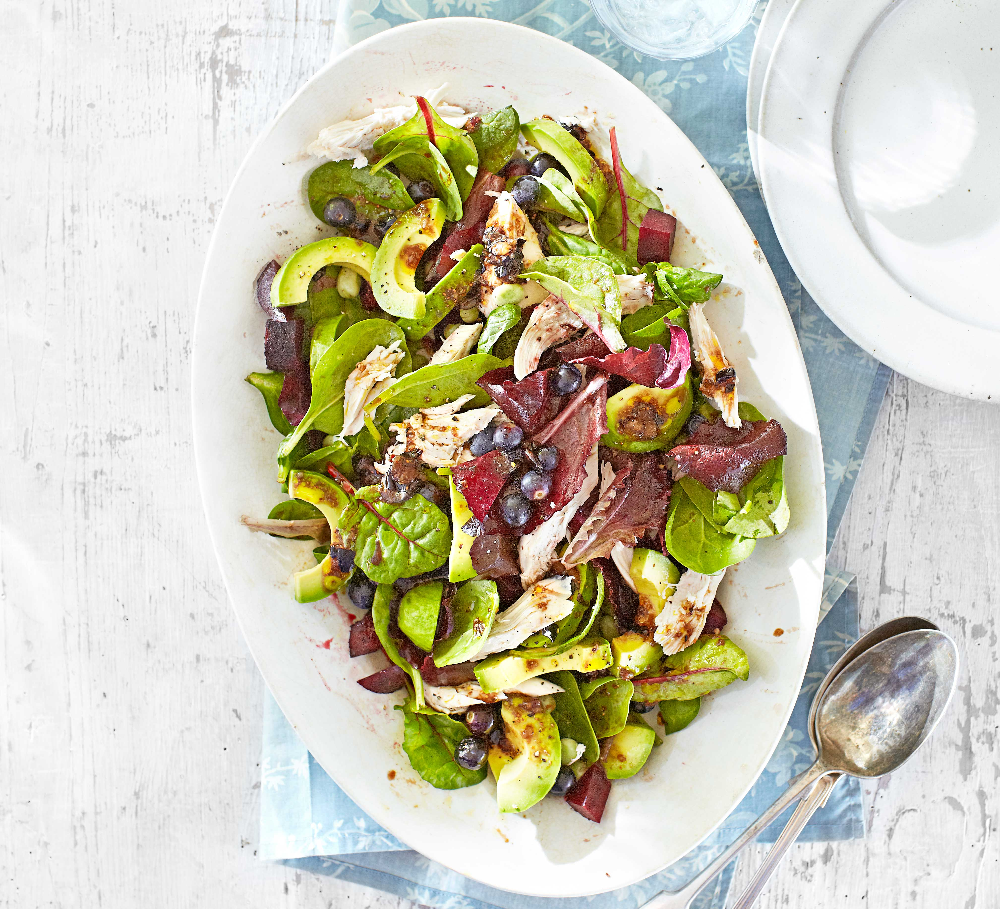

Chicken & avocado salad with blueberry balsamic dressing
Ingredients
- 1 garlic clove
- 85g blueberries
- 1 tbsp extra virgin rapeseed oil
- 2 tsp balsamic vinegar
- 125g fresh or frozen baby broad beans
- 1 large cooked beetroot, finely chopped
- 1 avocado, stoned, peeled and sliced
- 85g bag mixed baby leaf salad
- 175g cooked chicken
Recipe
- Finely chop the garlic. Mash half the blueberries with the oil, vinegar and some black pepper in
a
large salad bowl.
- Boil the broad beans for 5 mins until just tender. Drain, leaving them unskinned.
- Stir the garlic into the dressing, then pile in the warm beans and remaining blueberries with
the
beetroot, avocado, salad and chicken. Toss to mix, but don’t go overboard or the juice from the
beetroot will turn everything pink. Pile onto plates or into shallow bowls to serve
